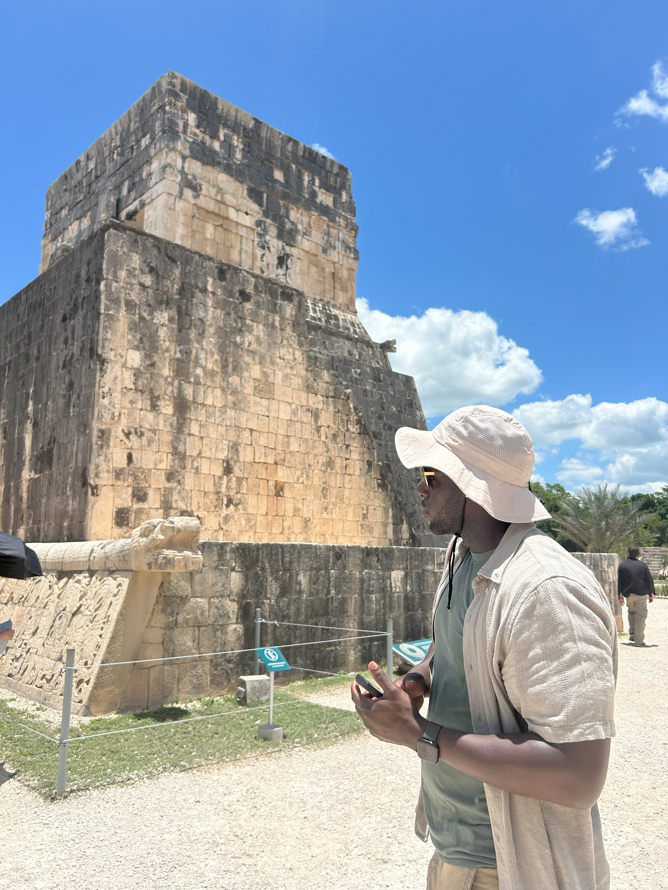
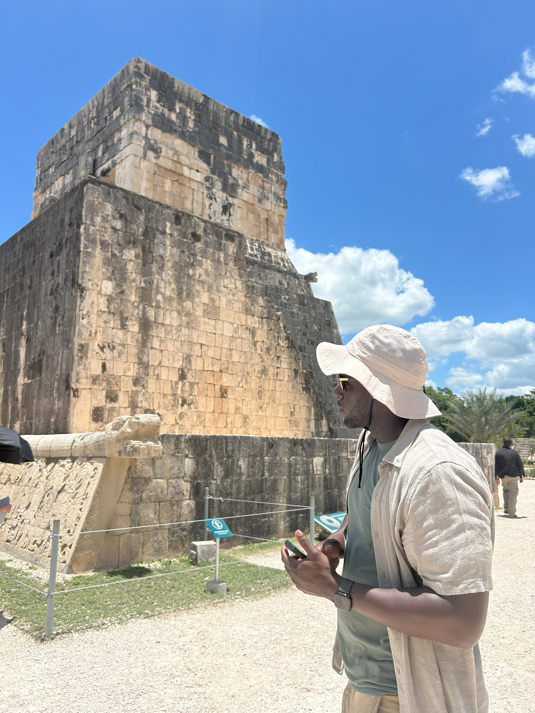
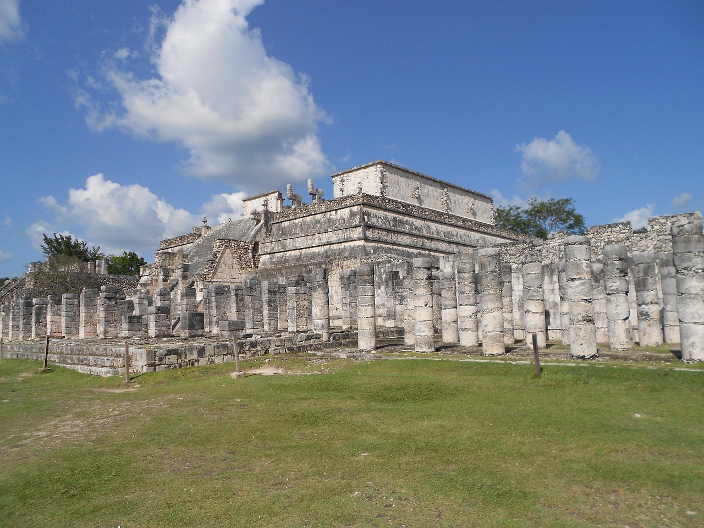
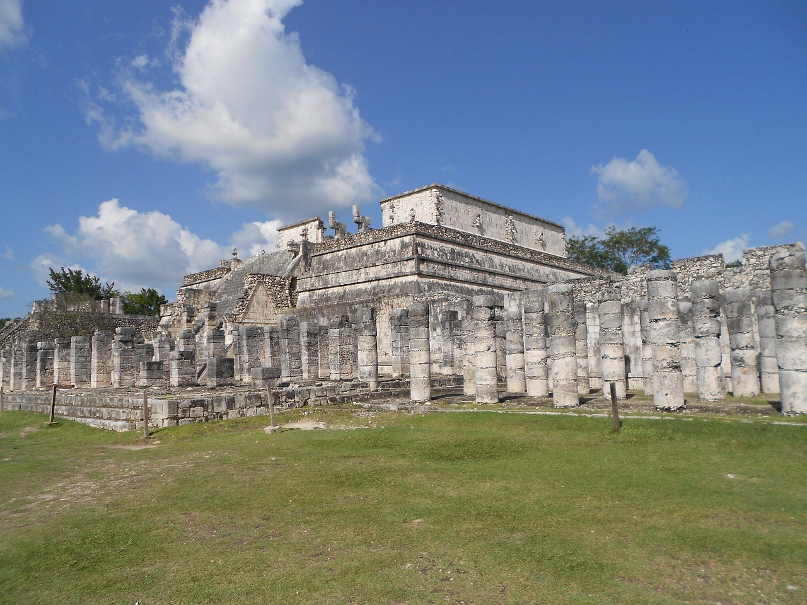

Xcaret and Xplore Amusement Parks
These 2 amusement parks are truly a sight to see! Xcaret offers a more family-friendly approach with snorkeling, animal observation, swimming with dolphins, and an epic show on the history of Mexico full of music, dancing and even fire!
Xplore park is an attraction you'll never forget! With its more than 10 gigantic zip lines, Xplore also holds a vast amount of the natural phenomenon native Mexicans refer to as cenotes. A cenote is a naturally formed sinkhole, that have been turned into some of the most beautiful swimming holes you can imagine.

 

 
